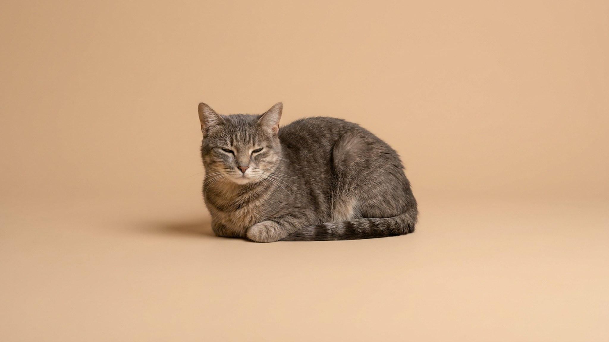

Вы замечаете: кот не идёт играть — лежит на тёплой лежанке. Собака утром смотрит на поводок и снова ложится. Это не лень и не «что-то не так» — это осень. Но у сезонного спада и у реальной проблемы со здоровьем внешне похожая картина. Ниже — как их различить и что делать, чтобы питомцу было комфортно до весны.
🐾 Хотите понять, что питомец говорит вам?
Опишите ситуацию или пришлите видео в AnimaLife — AI разберёт поведение вашего питомца и подскажет, что делать. Бесплатно, ответ за минуту.
Разобрать поведение → Разобрать в MAX →
У вас iPhone? AnimaLife есть в App Store
Световой день сокращается — и это напрямую влияет на биоритмы кошек и собак. Эпифиз (шишковидная железа) реагирует на длину светового дня и вырабатывает больше мелатонина. Результат: питомец сонливее, менее подвижен, меньше охотится за игрушкой или тянет на улицу.
У собак добавляется ещё один фактор — прогулки стали короче и скучнее: дождь, слякоть, темнеет раньше. Меньше беготни — меньше «заряженности» на следующие часы. У кошек, которые живут на улице или выходят на балкон, похожий эффект: холодно, неинтересно, лучше дома на батарее.
Это нормальная сезонная адаптация. Взрослая кошка может спать 14–18 часов в сутки, и осенью цифра сдвигается к верхней границе. Собака становится чуть медлительнее и охотнее лежит — особенно породы с густым подшёрстком, которые вообще-то рождены для прохладного климата.
Сезонный спад активности развивается постепенно и охватывает всё поведение равномерно. Если что-то из следующего — это не про осень:
Ни один из этих сигналов не «объясняется» осенью. Если заметили хотя бы два пункта одновременно — не ждите следующей недели: покажите питомца ветеринару и опишите, когда и как изменилось поведение.
🐾 У вашего питомца так же?
Расскажите в AnimaLife, как ведёт себя ваш питомец, — приложение объяснит причину и даст пошаговый план. Бесплатно, без записи к специалисту.
Разобрать свой случай → Разобрать в MAX →
У вас iPhone? AnimaLife есть в App Store
🐾 Понравился разбор?
Подпишитесь на канал — каждый день разбираем по одному тревожному симптому у кошек и собак: что в пределах нормы, а когда пора к врачу. Подпишитесь, чтобы не пропустить разбор, который может спасти здоровье вашего питомца.
Простая проверка: достаньте любимую игрушку кошки или покажите собаке поводок. Если реакция есть — хоть ленивая, хоть через зевок — питомец в норме. Если нет вообще никакой реакции на то, что обычно всегда работало — это повод присмотреться внимательнее.
Осень — хорошее время для ежегодного планового осмотра у ветеринара, если вы его ещё не сделали. Ничего срочного нет, но обсудите с врачом, стоит ли скорректировать рацион или режим активности с учётом возраста питомца.
Материал носит информационный характер и не заменяет очную консультацию ветеринара.